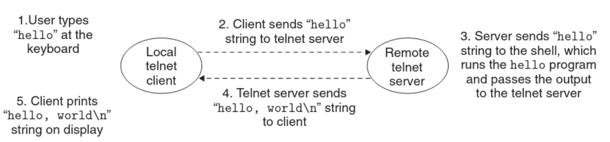

Suggest we have a simple hello program which outputs Hello world to the screen.
If we’re trying to run it remotely via telnet, the process would go as follows:

Takeaway ConceptPrevious NextA network is fundamentally another I/O device.